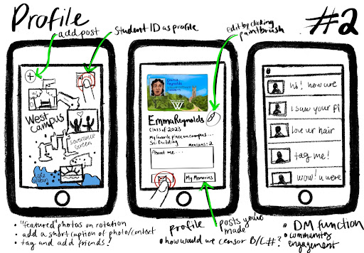
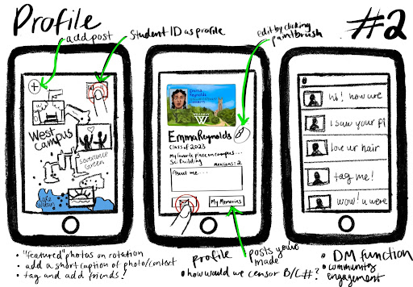
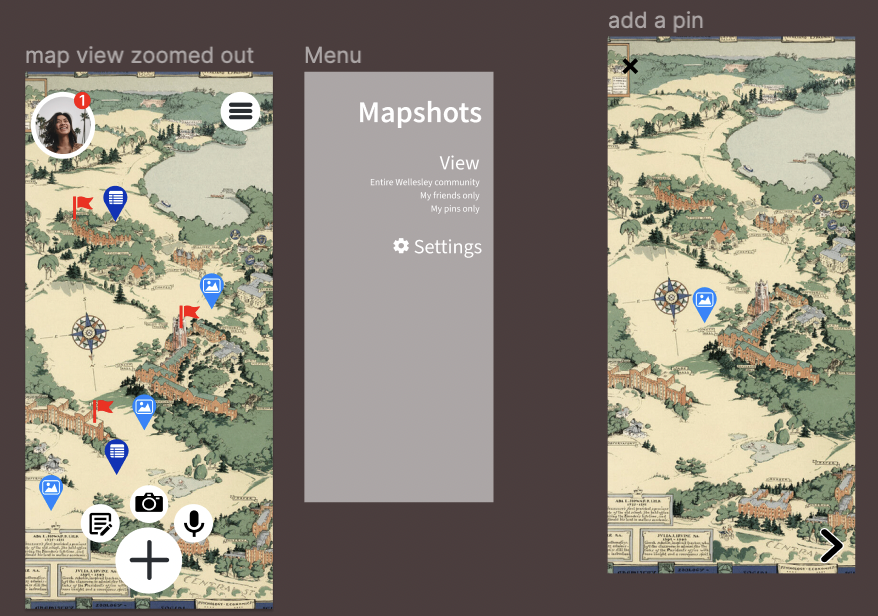
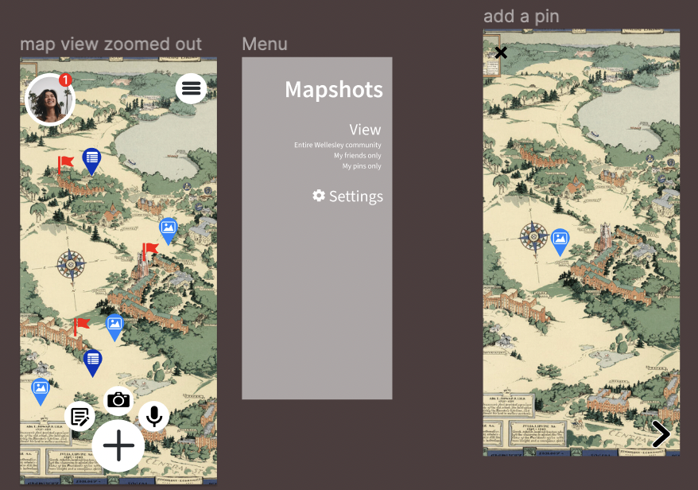

Team Members: Euphy Liu, Diana Padron, Sophie Sebastiani, Ariel Traver
Class: CS220 Human-Computer Interaction
The idea behind this project was to go through the 5 stages of UX design for an app
that would cultivate gratitude within the Wellesley community.
We chose to do this by creating a platform where people
could save and share photographs, messages, and voice recordings from around campus,
and connect to others in the community.
 

To begin, we sketched out a wireframe to display the overall function of our app and communicate
our ideas. The wireframes were then presented to our classmates and they had the opportunity to
give us feedback on them.

 

Using the feedback we recieved from our wireframe, we used figma to create a low-fidelity
prototype of all the different screens and interactions between them. The above pictures show
some of these screens, displaying the home screen, the account profile, and the messaging and
posting functions.
Then, using the feedback we recieved from the low-fidelity prototype, we used figma to create a high-fidelity prototype, which would be our final version of this project. This step really was about refining our design, color scheme, and some aspects of how users would interact with our interface, like how many clicks it would take for someone to get from a message back to the home page, how intuitive the posting was, and how users could move around the map.
While our final product didn't include every detail and feature that an actual coded version of the app would have, we achieved our goal of creating a high-fidelity mock up of the general behavior and design of such an app.
Through this project I learned a lot about what goes into every stage of design. I also gained many technical skills within figma, such as how to make a scrollable background or make it seem like your clicks are actually doing something to make the experience of clicking through the prototype more realistic. This project also helped me develop my teamwork skills further, as working with five peopleon one project came with some challenges like finding time to meet, working through creative disagreements, and relying on everyone to do their part equally and on time.